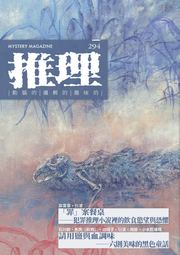

《推理》雜誌長期徵稿
題材不限，原創為唯一門檻。懸疑、推理、恐怖三種氣味，任一種都收。小說、詩、評論、散文，六個類別長期開放。
最近的截稿日：9/15（第 307 期・金融犯罪）

題材不限，原創為唯一門檻。懸疑、推理、恐怖三種氣味，任一種都收。小說、詩、評論、散文，六個類別長期開放。
最近的截稿日：9/15（第 307 期・金融犯罪）
長度上限與稿酬。收稿狀態依各期已排定的篇數即時判定。
| 短篇小說 | 20,000 字以內 | 每字 0.1 元，單篇上限 1,000 元；寄贈當期雜誌 1 冊 | 6 期收稿中 |
|---|---|---|---|
| 微型小說 | 2,000 字以內 | 寄贈當期雜誌 1 冊 | 8 期收稿中 |
| 海內外文學評論 | 800 字以內 | 寄贈當期雜誌 1 冊 | 3 期收稿中 |
| 影視、遊戲、動漫評介 | 600 字以內 | 寄贈當期雜誌 1 冊 | 8 期收稿中 |
| 現代詩創作 | 40 行以內 | 寄贈當期雜誌 1 冊 | 長期收稿 |
| 現代散文創作 | 1,500 字以內 | 寄贈當期雜誌 1 冊 | 長期收稿 |
主題稿投最貼近的那一期；非主題稿不受主題限制，依收稿狀況排期。已排滿的期別不列在這裡。
| 3072026.11 出刊 | 金融犯罪、財務、錢 | 9/15 | 微型小說影視、遊戲、動漫評介 |
|---|---|---|---|
| 3082026.12 出刊 | 法律、法庭、律師、偵查、法務、司法 | 10/15 | 微型小說短篇小說影視、遊戲、動漫評介 |
| 3092027.01 出刊 | 社會工作、社工、社會安全、社會福利、社區、兒少保護 | 11/15 | 微型小說影視、遊戲、動漫評介 |
| 3102027.02 出刊 | 服裝、服飾、配件、穿著、褲子、外套、衣服 | 12/15 | 微型小說短篇小說海內外文學評論影視、遊戲、動漫評介 |
| 3112027.03 出刊 | 日常之謎：失物、錯認、生活裡的小異常，無屍體無犯罪 | 1/15 | 微型小說短篇小說海內外文學評論影視、遊戲、動漫評介 |
| 3122027.04 出刊 | 妖怪、妖異、神明、神 | 2/15 | 微型小說短篇小說影視、遊戲、動漫評介 |
| 3132027.05 出刊 | AI、人工智慧 | 3/15 | 微型小說短篇小說海內外文學評論影視、遊戲、動漫評介 |
| 3142027.06 出刊 | 精神醫學、心理創傷、不可靠敘事 | 4/15 | 微型小說短篇小說影視、遊戲、動漫評介 |
以下表單即為投稿入口。標註星號的欄位必填，請以繁體中文填寫。
▼